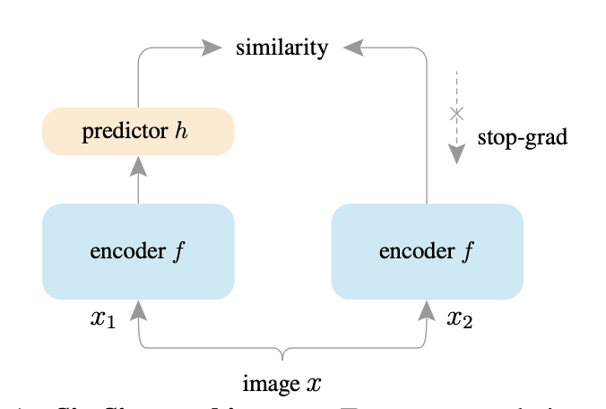

Siamese Networks
Table of Contents
1. SimSiam: Exploring Simple Siamese Representation Learning
Exploring Simple Siamese Representation Learning - 2011.10566

Figure 1: SimSiam
- uses stop-gradient operator (aka. tensor.detach())
The loss function is:
\(L = \frac 1 2 D(p_1, z_2) + \frac 1 2 D(p_2, z_1)\)
where, \(z_1\) and \(z_1\) held constant (i.e. stop gradient) are the representation of the input \(x\), and \(p_1\) and \(p_2\) are the prediction of the representation.
This loss function, as hypothesized by the authors, optimizes for the following objective:
\(L(\theta, \eta) = E_{x,T} \big[ || F_{\theta}(T(x)) - \eta_x ||_2^2 \big]\)
where, \(F_{\theta}\) is a network, \(T\) is an augmentation, \(x\) is an image and \(\eta_x\) is intended to be the representation of the image \(x\).
This optimization can be done is two-step iterations:
- Optmizing \(F_{\theta}\) while keeping \(\eta_x\) constant
Then, optimizing \(\eta_x\) keeping \(F_{\theta}\) constant.
See section 5 of the paper at pg. 5. It has a nicely written interesting argument and supporting evidence.
I find this similar to the Generalized Policy Iteration in Reinforcement Learning.
- The representation learned are found to be transferable across tasks. Increasing the approach's utility for Transfer Learning.